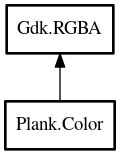

Color
Object Hierarchy:

Description:
public struct Color : RGBA
Represents a RGBA color and has methods for manipulating the color.
Content:
Static methods:
- public static Color from_hsv (double h, double s, double v)
Create new color for the given HSV values while h in [0,360), s in
[0,1] and v in [0,1]
- public static Color from_hsl (double h, double s, double l)
Create new color for the given HSL values while h in [0,360), s in
[0,1] and l in [0,1]
- public static Color from_prefs_string (string s)
Create new color converted from string formatted like "%d;;%d;;%d;;%d"
with numeric entries ranged in 0..255
Methods:
- public void set_hsv (double h, double s, double v)
Set HSV color values of this color.
- public void set_hue (double hue)
Sets the hue for the color.
- public void set_sat (double sat)
Sets the saturation for the color.
- public void set_val (double val)
Sets the value for the color.
- public void get_hsv (out double h, out double s, out double v)
Get HSV color values of this color.
- public double get_hue ()
Returns the hue for the color.
- public double get_sat ()
Returns the saturation for the color.
- public double get_val ()
Returns the value for the color.
- public void add_hue (double val)
Increases the color's hue.
- public void set_min_sat (double sat)
Assures the color's saturation is greater than or equal to the given
one.
- public void set_min_val (double val)
Assures the color's value is greater than or equal to the given one.
- public void set_max_sat (double sat)
Assures the color's saturation is less than or equal to the given one.
- public void set_max_val (double val)
Assures the color's value is less than or equal to the given one.
- public void multiply_sat (double amount)
Multiplies the color's saturation using the amount.
- public void brighten_val (double amount)
Brighten the color's value using the value.
- public void darken_val (double amount)
Darkens the color's value using the value.
- public void darken_by_sat (double amount)
Darkens the color's value using the saturtion.
- public void get_hsl (out double h, out double s, out double l)
Get HSL color values of this color.
- public void set_hsl (double h, double s, double v)
Set HSL color values of this color.
- public string to_prefs_string ()
Convert color to string formatted like "%d;;%d;;%d;;%d" with numeric
entries ranged in 0..255
Inherited Members:
All known members inherited from struct Gdk.RGBA